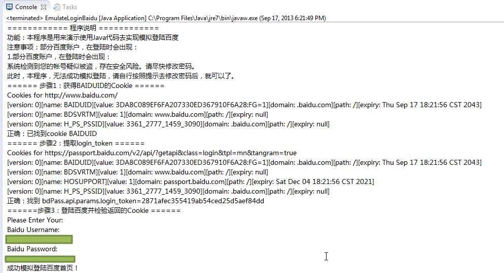

Java模拟登录百度首页
很早之前用过Java实现了模拟百度登录。
主体代码是：
/**
* [File]
* EmulateLoginBaidu.java
*
* [Function]
* Use Java code to emulate login baidu
*
* 【教程】模拟登陆百度之Java代码版
* https://www.crifan.com/emulate_login_baidu_use_java_code
*
* [Version]
* v1.0, 2013-09-17
*
* [Note]
* 1. need add apache http lib:
* 【已解决】Eclipse的java代码出错：The import org.apache cannot be resolved
* https://www.crifan.com/java_eclipse_the_import_org_apache_cannot_be_resolved/
* 2.need crifanLib.java
* http://code.google.com/p/crifanlib/source/browse/trunk/java/crifanLib.java
*
* [History]
* [v1.0]
* 1. initial version, finally successfully emulate login baidu using java code.
*/
//import java.io.IOException;
import java.util.ArrayList;
//import java.util.Calendar;
//import java.util.Date;
//import java.util.GregorianCalendar;
import java.util.HashMap;
//import java.util.Hashtable;
import java.util.List;
//import java.util.Map;
import java.util.Scanner;
import java.util.regex.Matcher;
import java.util.regex.Pattern;
import org.apache.http.HttpResponse;
import org.apache.http.NameValuePair;
import org.apache.http.cookie.Cookie;
//import org.apache.http.impl.cookie.BasicClientCookie;
//import org.apache.http.impl.cookie.BasicClientCookie2;
import org.apache.http.message.BasicNameValuePair;
//import crifanLib;
/**
* @author CLi
*
*/
public class EmulateLoginBaidu {
static crifanLib crl;
/**
* @param args
*/
public static void main(String[] args) {
crl = new crifanLib();
// TODO Auto-generated method stub
EmulateLoginBaiduUsingJava();
}
// emulate login baidu using java code
public static void EmulateLoginBaiduUsingJava()
{
System.out.println("============ 程序说明 ============");
System.out.println("功能：本程序是用来演示使用Java代码去实现模拟登陆百度");
System.out.println("注意事项：部分百度账户，在登陆时会出现：");
System.out.println("1.部分百度账户，在登陆时会出现：");
System.out.println("系统检测到您的帐号疑似被盗，存在安全风险。请尽快修改密码。");
System.out.println("此时，本程序，无法成功模拟登陆，请自行按照提示去修改密码后，就可以了。");
boolean bLoginBaiduOk = false;
List<Cookie> curCookieList;
//step1: login baidu, got cookie BAIDUID
System.out.println("====== 步骤1：获得BAIDUID的Cookie ======");
String strTokenValue = "";
boolean bGotCookieBaiduid = false;
String strBaiduUrl = "http://www.baidu.com/";
HttpResponse baiduResp = crl.getUrlResponse(strBaiduUrl);
curCookieList =crl.getCurCookieStore().getCookies();
crl.dbgPrintCookies(curCookieList, strBaiduUrl);
for(Cookie ck : curCookieList)
{
String cookieName = ck.getName();
if(cookieName.equals("BAIDUID"))
{
bGotCookieBaiduid = true;
}
}
if (bGotCookieBaiduid)
{
System.out.println("正确：已找到cookie BAIDUID");
}
else
{
System.out.println("错误：没有找到cookie BAIDUID ！");
}
//step2: login, pass paras, extract resp cookie
System.out.println("====== 步骤2：提取login_token ======");
boolean bExtractTokenValueOK = false;
if(bGotCookieBaiduid)
{
//https://passport.baidu.com/v2/api/?getapi&class=login&tpl=mn&tangram=true
String getapiUrl = "https://passport.baidu.com/v2/api/?getapi&class=login&tpl=mn&tangram=true";
String getApiRespHtml = crl.getUrlRespHtml(getapiUrl);
curCookieList =crl.getCurCookieStore().getCookies();
crl.dbgPrintCookies(curCookieList, getapiUrl);
//bdPass.api.params.login_token='3cf421493884e0fe9080593d05f4744f';
Pattern tokenValP = Pattern.compile("bdPass\\.api\\.params\\.login_token='(?<tokenVal>\\w+)';");
Matcher tokenValMatcher = tokenValP.matcher(getApiRespHtml);
//boolean foundTokenValue = tokenValMatcher.matches(); // will not match, but can search to find it
boolean foundTokenValue = tokenValMatcher.find();
if(foundTokenValue)
{
strTokenValue = tokenValMatcher.group("tokenVal"); //3cf421493884e0fe9080593d05f4744f
System.out.println("正确：找到 bdPass.api.params.login_token=" + strTokenValue);
bExtractTokenValueOK = true;
}
else
{
System.out.println("错误：没找到bdPass.api.params.login_token !");
}
}
//step3: verify returned cookies
if (bGotCookieBaiduid && bExtractTokenValueOK)
{
System.out.println("======步骤3：登陆百度并检验返回的Cookie ======");
/*
//Note:
//here, has verify, not manually update some cookie's domain and expiry
//also can emulate baidu successfully
//do some workaround to makesure here cookie H_PS_PSSID not expire
//[version: 0][name: H_PS_PSSID][value: 3359_3341_2776_1424_2981][domain: .baidu.com][path: /][expiry: null]
//Thu Sep 17 14:22:08 CST 2043
//Date newExpiryDate = new Date(2043, 9, 17);
Date newExpiryDate = new Date(143, 9, 17);
//Calendar newExpiryCalendar = new GregorianCalendar(2043, 9, 17, 14, 22, 8);
BasicClientCookie hPsPssidCookie = null;
BasicClientCookie dbsvrtmCookie = null;
//int hPsPssidCookieIdx = 0;
curCookieList = crl.getCurCookieList();
for(Cookie ck : curCookieList)
{
if(ck.getName().equalsIgnoreCase("H_PS_PSSID"))
{
//hPsPssidCookieIdx = curCookieList.indexOf(ck);
hPsPssidCookie = (BasicClientCookie) ck;
hPsPssidCookie.setExpiryDate(newExpiryDate);
ck = hPsPssidCookie;
//break;
}
if(ck.getName().equalsIgnoreCase("BDSVRTM"))
{
dbsvrtmCookie = (BasicClientCookie) ck;
dbsvrtmCookie.setDomain(".baidu.com");
dbsvrtmCookie.setExpiryDate(newExpiryDate);
ck = dbsvrtmCookie;
//break;
}
}
crl.setCurCookieList(curCookieList);
*/
String staticPageUrl = "http://www.baidu.com/cache/user/html/jump.html";
List<NameValuePair> postDict = new ArrayList<NameValuePair>();
//ArrayList<NameValuePair> headerDict = new ArrayList<NameValuePair>();
//postDict.add(new BasicNameValuePair("ppui_logintime", ""));
postDict.add(new BasicNameValuePair("charset", "utf-8"));
//postDict.add(new BasicNameValuePair("codestring", ""));
postDict.add(new BasicNameValuePair("token", strTokenValue));
postDict.add(new BasicNameValuePair("isPhone", "false"));
postDict.add(new BasicNameValuePair("index", "0"));
//postDict.add(new BasicNameValuePair("u", ""));
//postDict.add(new BasicNameValuePair("safeflg", "0"));
postDict.add(new BasicNameValuePair("staticpage", staticPageUrl));
postDict.add(new BasicNameValuePair("loginType", "1"));
postDict.add(new BasicNameValuePair("tpl", "mn"));
postDict.add(new BasicNameValuePair("callback", "parent.bdPass.api.login._postCallback"));
//get input baidu username and password
String strBaiduUsername = "";
String strBaiduPassword = "";
Scanner inputReader = new Scanner(System.in);
System.out.println("Please Enter Your:" );
System.out.println("Baidu Username:" );
strBaiduUsername = inputReader.nextLine();
//System.out.println("You Entered Username=" + strBaiduUsername);
System.out.println("Baidu Password:" );
strBaiduPassword = inputReader.nextLine();
//System.out.println("You Entered Password=" + strBaiduPassword);
inputReader.close();
postDict.add(new BasicNameValuePair("username", strBaiduUsername));
postDict.add(new BasicNameValuePair("password", strBaiduPassword));
postDict.add(new BasicNameValuePair("verifycode", ""));
postDict.add(new BasicNameValuePair("mem_pass", "on"));
String baiduMainLoginUrl = "https://passport.baidu.com/v2/api/?login";
String loginBaiduRespHtml = crl.getUrlRespHtml(baiduMainLoginUrl, null, postDict);
//Map cookieNameDict = new Map();
//Map cookieNameDict = new Hashtable();
HashMap<Object, Boolean> cookieNameDict = new HashMap<Object, Boolean>();
cookieNameDict.put("BDUSS", false);
cookieNameDict.put("PTOKEN", false);
cookieNameDict.put("STOKEN", false);
//Set-Cookie: SAVEUSERID=deleted; expires=Mon, 17-Sep-2012 09:45:03 GMT; path=/; domain=passport.baidu.com; httponly,
//cookieNameDict.put("SAVEUSERID", false);
curCookieList = crl.getCurCookieList();
for(Object objCookieName : cookieNameDict.keySet().toArray())
{
String strCookieName = objCookieName.toString();
for(Cookie ck: curCookieList)
{
if(strCookieName.equalsIgnoreCase(ck.getName()))
{
cookieNameDict.put(strCookieName, true);
}
}
}
boolean bAllCookiesFound = true;
for (Object objFoundCurCookie : cookieNameDict.values())
{
bAllCookiesFound = bAllCookiesFound && Boolean.parseBoolean(objFoundCurCookie.toString());
}
bLoginBaiduOk = bAllCookiesFound;
if (bLoginBaiduOk)
{
System.out.println("成功模拟登陆百度首页！" );
}
else
{
System.out.println("模拟登陆百度首页 失败！");
System.out.println("所返回的HTML源码为：" + loginBaiduRespHtml);
}
}
return;
}
}
成功模拟登陆百度，输出效果截图：

完整的Eclipse项目源码下载：
- EmulateLoginBaidu_java_2013-09-17_crifanLibVersion.7z
- 注意事项
- 需要导入
org.apache.http的库 - 其中用到的
crifanLib的java代码详见： - 部分百度账户，在登陆时会出现
系统检测到您的帐号疑似被盗，存在安全风险。请尽快修改密码。，此时本程序无法成功模拟登陆，请自行按照提示去修改密码后，即可成功模拟登录
- 需要导入
- 注意事项
具体过程详见：